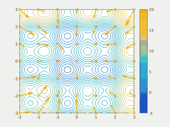
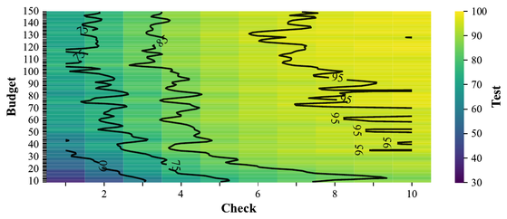
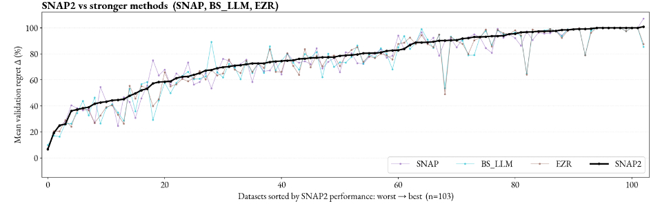
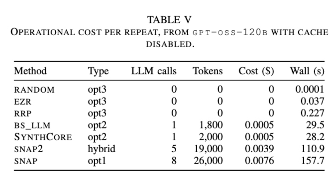

(What you need to know about your future career in AI)
2026-08-16, updated 2026-08-16
Summary: Are you a good software engineer? What does "good" mean? Try this: if anyone can do it for a dollar, a good engineer does it for a penny. They know their machine's parts, how the parts fit, and how to reassemble them into something better and faster. AI is parts too, symbolic and neural, and we will soon have to reassemble them: Big AI is a leaking bubble, and when it pops a third AI winter follows. This lecture is for the rats who will thrive in that winter: engineers nimble enough to nibble AI down to small models, small data, and small tools one person can build, test, and understand. Learn the parts, and you are not renting the future from a dinosaur. You are building it.
Huge LLM companies dominate today's AI scene. They hold more resources than we can ever know or access. They sell a world view that contains only them. They change their technology so fast that no one can stay current. They are like T-rex dinosaurs: they will monster you and your career.
These AI dinosaurs look unstoppable, unquestionable, inevitable. It seems all we can do is bow down, or run away. But a meteorite is coming to wipe out their ecosystem:
1 Data centers die young – the accountants book GPUs as lasting five or six years, but the real economic life is closer to two or three. Michael Burry warns that this slow write-off understates depreciation by some $176 billion 1. overstating hyperscaler profits by 20% or more. And we keep running out of the power and water 2 needed to drive them.
2 The benefits fall short of the promises – e.g. look at the AI slop 3 generated by automatic coding tools; measured carefully, AI assistants can even make experienced developers slower 4. Most corporate LLM pilot projects never show a measurable profit.
3 The revenues fall short too – in 2024, Sequoia Capital asked AI's $600B question 5: where is the revenue to cover all that spending? No one answered. Instead, the gap has since doubled, to some $1.2 trillion.
4 The earnings are circular – large AI companies inflate (fraudulently?) their reported earnings with "I pay you to buy from me" deals 6.
5 Local models keep getting better – when the model running on your laptop 7 is good enough, the economic case for the expensive cloud disappears.
6 Open models keep getting better too – as open source Chinese models such as DeepSeek 8 and Qwen 9 come on line, companies like OpenAI and Anthropic have less and less that only they can sell.
7 The regulators are waking up – governments respond slowly, but they do respond; see the EU AI Act 10.
So we are heading for a third AI winter 11: a steep decline in public interest, venture capital, and corporate funding for all things AI. How will you survive it? Will you move to smart hardware/software combinations? Will you jump to outer space?
Here is another option. Look down. Scurrying around the feet of the LLMs are little rodents, eating the dinosaurs' eggs. The rats are small, cheap, fast, and curious. They need no data center. They run on found food: small models, small data, small tools that one person can build, test, and understand. When the meteorite lands, the dinosaurs starve while the rats inherit the earth12.
This subject teaches you how to be a rat. We break up AI into numerous small parts and discuss shortcuts that make each part very fast. Kautz's neurosymbolic taxonomy (discussed below) makes the same move at field scale: mix and match the best of the old AI with the best of the new.
So be a discerning user of AI technology. Assess the merits of each approach, and know when to use what. Some of the discussion is theoretical—challenge problems where you can prove me wrong. But as we shall see, other parts are strongly supported by extensive experimental results.
Here are four rat tricks that are very useful.
1 Reuse, then refactor: Rats poke around the ground, feeding on whatever tidbits they can find. Good software engineers do the same: we look inside the skills we ask our AI to deploy, and before writing new code for a new skill, we reuse old code. This subject demonstrates that with some domain engineering13. Suppose we were trying to buy a car. Here are ten skills we might ask of our AI:
| task | skill | %LOC | new LOC |
|---|---|---|---|
| From 400 cars, find unusually great buys. | remember (representation) | 45% | 150 |
| Guess the fuel use before we see the sticker | guess (prediction) | 17% | 57 |
| Say when "better" is real, and when it is noise | certify (certification) | 12% | 40 |
| Decide on the spot as cars arrive one at a time | flow (streaming) | 8% | 27 |
| Say why the bad cars are slow, or thirsty | blame (diagnosis) | 6% | 20 |
| Justify any verdict to a skeptical buyer | justify (explanation) | 4% | 13 |
| Find the best car, test-driving very few | choose (optimization) | 3% | 10 |
| Find the cheapest change that fixes this car | fix (repair) | 3% | 10 |
| Spot a strange car: a typo, or a scam | spot (anomaly detection) | 2% | 6 |
| Race our skills against the field's best | race (baselining) | 0% | 0 |
| Totals | 100% | 333 |
As seen here, the first skill costs 45% of the code: it pays for the data structures everything shares. After that, each new skill mostly rewires old parts: prediction costs 17%, optimization 3%, anomaly detection 2%. Skill i+1 reuses the machinery already built for skills 1..i.
Reuse alone is not enough: rat engineers also refactor. If any fool can do it for a dollar, an engineer asks how to do it for a penny. What code can we throw away, with everything still working? The table above shows the payoff of all that redoing: a few hundred lines of code now support world-class optimization and explanation algorithms. Ganguly's FSE work14 shows these data-light methods matching far heavier learners. Rayegan's JSS work15 shows the same small toolkit generating explanations that are both shorter and clearer than those of its rivals. Reuse, then refactor, and everything gets simple, understandable, verifiable.
2 Keep it simple, keep it stochastic: Exploring every choice, in every order, is how careful solvers work, and it is why they crawl. Staggering about, choosing at random, can be orders of magnitude faster: a random step costs almost nothing, so you can afford millions of them. The rat trick for large problems has two parts: stagger, then summarize what the staggers revealed.
MaxWalkSat16 is the classic. To solve a hard logic problem, start with a random assignment. Find a broken clause and flip one of its variables: usually the flip that fixes most, sometimes any variable at all, chosen at random. That is the whole algorithm. Selman, Kautz, and Cohen showed this pinch of noise let a simple local search crack constraint problems that defeated the systematic solvers of the day. Here the summary is tiny: the best assignment so far, and a count of broken clauses.

Particle swarm optimization17 (see the figure at right) makes the summary explicit. Each particle in the flock starts at a random guess and staggers, but two memories pull it back: the best place it has seen, and the best place anyone has seen. Random motion explores; the two bests summarize what exploring found; and from those three simple pulls the swarm circles in on the prize.
The same shape appears in machine learning. Bergstra and Bengio18 showed that random trials tune learners better than careful grid search: the grid spends its budget on parameters that do not matter, while scattered random points quickly reveal which few do. And it is why EZR does so much with so little code: stagger through a few dozen random labels, then summarize them into a small tree (trick 3, below, counts how few labels that takes).
3 Pick your battles: good enough is near enough optimization (NEO): A little maths explains the success of random search. Random search assumes that near enough is good enough. That assumption makes search cheap.
First, see what search can cost. Some tasks are inherently complex. Reward-free reinforcement learning for autonomous cars must learn enough to satisfy any future, as-yet-unwritten safety law. Jin et al.19 show that even simple versions of this task need 1015 samples.
Costs fall if you know how solutions will be judged. Search then becomes the Best Arm problem. Hoeffding20 says: to distinguish A alternatives with accuracy ε and confidence C,
So a dozen binary choices (A=212), at C=95% and ε=5%, needs 9,605 samples. Much better than 1015, but still impractical in many domains.
(Aside: do not expect LLMs to label those samples for you. For SE problems, Ahmed et al.21 warn that LLMs assist labeling but cannot automate it. Other methods are no better. Herbold et al.22 report that labeling tools debugged for decades still make many errors; Yu et al.23 find massive labeling errors in real-world SE data sets. Human experts are slow, and grow error-prone when rushed; Easterby-Smith24 reports hours of work for just a few cases.)
Costs fall again if near enough is good enough. Real solutions can vary by a small amount, so a rat may stop at any solution indistinguishable from the best. Cohen calls two solutions "small to medium" different when they are 0.2σ to 0.5σ apart, and a normal curve spans ±3σ. So "indistinguishable" means p = ((0.2+0.5)/2)/6 ≈ 6%. Hamlet gives the confidence C of finding an event of probability p in n independent trials:
At C=0.95 and p=0.06, rats can stop after only n=48 samples.
Costs fall once more with prior knowledge. Suppose those 48 samples built a model that can guess which of two solutions is worse. A binary chop then finds good solutions in:
This maths rests on wildly optimistic assumptions: solutions are evenly distributed, along one dimension, and that dimension is Gaussian. Yet in practice, the numbers hold.

Figure 2 of arXiv:2606.03640 built
models from 10 to 200 samples, then checked the top 1 to 10 sorted items
in a holdout set. This ran 100,000 times, picking data sets and
hyperparameters at random each time, over 127 data sets from the MOOT
repository25. The vertical axis is the build
budget y; the horizontal axis is the top x items
checked. Above a budget of about 50 and a check of about 5, everything
is flat at 95. The paper's own summary: at
(budget, check) = (50, 6) the learner "usually achieves
above an 85% win", and "checking beyond 7 items seems not particularly
useful".
In a result that should please every rat, those numbers (50, 6) sit very close to the (48, 6) computed above.
4 Look for the cracks between the parts: AI is not one thing. It is parts, joined at seams. My challenge to you is this: we drop our little nimble rats into those seams, can we build a better faster AI?
The following table extends Henry Kautz's 2020 AAAI address26, and his 2024 update of it, which together map eight ways to join old symbolic AI (logic, search, solvers) to new neural AI (deep learners, LLMs). We add two more: symbolic alone, and neural alone, for ten cells in all. Most folks who just use ChatGPT, and nothing else, do not realize they are stuck in one tiny corner of this space of possibilities. The other nine cells are where the rats can zip in and speed things up.
Kautz's notation is a little arcane, so here is a simpler one. Write S for a symbolic part, N for a neural part. Then read the joins off the table, each with an SE example:
| pattern | meaning | SE example |
|---|---|---|
| S | symbols alone | EZR's domain engineering (trick 1, above): optimize and explain in 333 lines |
| N | a net alone | LLMs label SE optimization data; Senthilkumar's EMSE work27 makes those raw labels robust |
| S; N; S | symbols in, net thinks, symbols out | prompt an LLM with code, read back a review; the ChatGPT cell |
| S[N] | symbolic boss calls a neural helper | an issue-triage pipeline (the boss) calls a sentiment net to score each incoming report (Lin et al.28); AlphaGo's tree search calling its neural scorer is Kautz's classic case |
| N; S | net proposes, symbols check | LLMs translate requirements to temporal logic, then model checkers test them (nl2spec29); LLM warm-starts seed a classical active learner (Senthilkumar's TOSEM work30) |
| S; N | symbols build the net's diet | SE knowledge builds the training pairs; rules compile away into weights (Lample & Charton31; Hu et al.32) |
| S as N | rules are templates for the net | logic clauses shape the network's structure (Logic Tensor Networks33) |
| S in loss | rules graded into training | coding standards as semantic loss: breaking a rule costs the net at training time (Xu et al.34) |
| N[S] | neural boss calls a symbolic helper | an LLM that calls calculators, search, and solvers mid-answer (Toolformer35); Kautz's own favorite, and his demo teaches GPT to call a SAT solver |
| S then N | cheap symbols first, dear net second | classical search finds good seeds; the LLM polishes them (Srinivasan36) |
The N[S] row hides a joke at the dinosaurs' expense. When Claude's own source code recently bumped into public view, readers found much S inside that N: prompts, rules, regular expressions, and tool calls, all wrapped around the net. Even the flagship dinosaurs are secretly neurosymbolic.

The last row is the newest trick, and the figures show why it works. Srinivasan shows that order matters: run the cheap classical optimizer first, then hand its best results to the LLM. Across 103 MOOT data sets (above), that hybrid, SNAP2, matches or beats SNAP (the LLM-heavy tool) and every other method tried. And note how well the little symbolic EZR tracks the winners.

Then look at the bill (above). Per repeat, SNAP spends 8 LLM calls, 26,000 tokens, and 158 seconds. The SNAP2 hybrid spends 5 calls and 111 seconds. EZR alone spends zero calls, zero tokens, zero dollars, and 0.04 seconds. So if near enough is good enough (trick 3), the little symbolic engine does the job in a blink, with tiny code and no tokens at all.
The lesson of the whole table is the same. Do not buy one giant AI. Be a discerning shopper. Ask what each part does cheaply and well, then join the parts at the seam that pays.
"Eating your own dog food" (or "dogfooding") in software engineering means using your own tools and processes to run your own daily tasks. It turns out this page is powered by dog food. In an example of S[N] (symbolic boss, neural helper), it was generated as follows:
Markdown, then one sed, then pandoc, then
30 lines of CSS. The tooling and much of the copy were shaped with an
LLM, driven by prompts like: "write prep.awk, much simpler than
md2html" · "would a general markdown tool reduce prep to just
preprocessing?" · "css under 200 words, not minimized" ·
"less brutalist; centre it; Optima" · "say it in half the
space" · "kill 2 more lines" · "why 2 PSO
graphics?" · "write a better random section: exploring every
choice is slow; stagger, then summarize what the staggers revealed"
· "one blank line before each set of refs" · "'ub' in Fork
me on GitHub obscured". Short prompts, many rounds; the human
chose, the machine typed. Cheap symbolic tools (sed,
pandoc, make) wrapped around a neural
helper.
Note the obsession with simplification. Do it, then do it again, shorter.